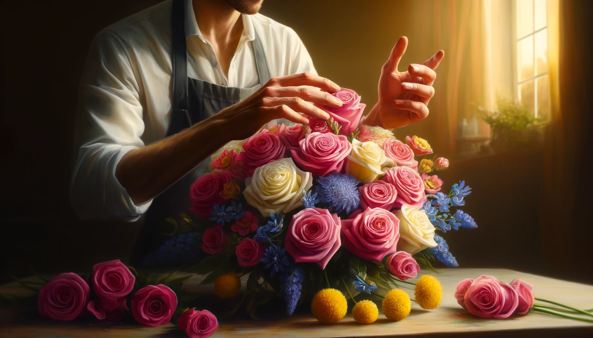
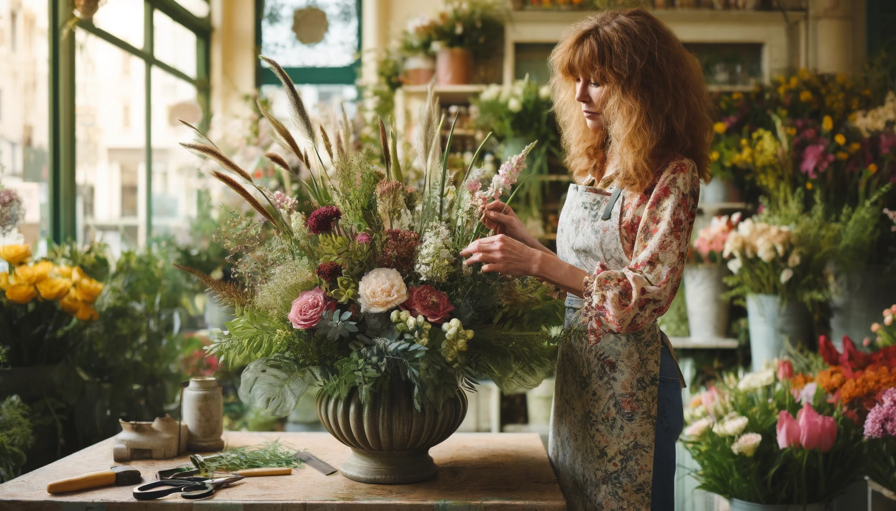
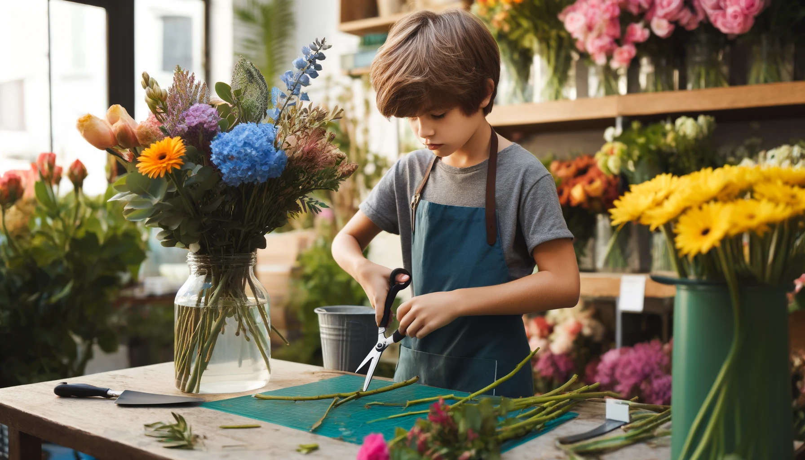
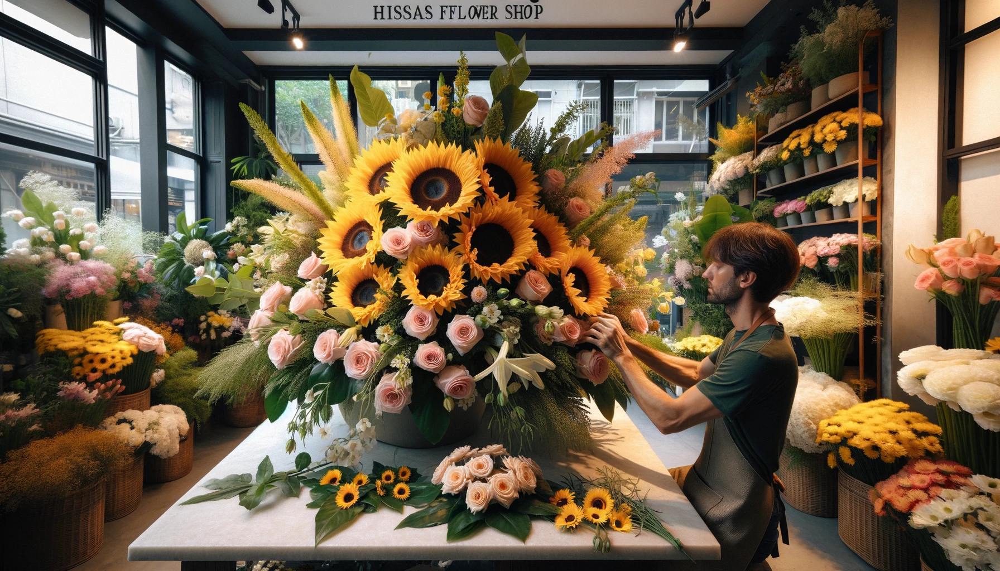

5 Steps to Crafting Stunning and Memorable Floral Designs
Published on April 16, 2024 | Hiyas Flowershop
Creating exquisite floral arrangements is an art form that can be both fulfilling and enjoyable, whether you're an experienced florist or just starting out. In this guide, we'll walk you through five straightforward steps to design breathtaking floral displays that will surely impress..

1. Gather Your Materials:
Begin by collecting all the essential items needed for your arrangement. This includes a variety of flowers, some greenery, a vase or floral foam, floral shears, and decorative extras like ribbons or gems. Opt for flowers that blend well together, offering a mix of colors, shapes, and textures.
2. Prepare the Flowers:
Prepare your blooms by stripping off any extra leaves and cutting the stems diagonally to enhance water absorption. Fill your vase with fresh water mixed with a floral preservative to extend the freshness of your flowers.

3. Choose a Focal Point:
Every eye-catching arrangement needs a focal point. Choose one or two prominent flowers that stand out due to their vibrant color or distinctive shape. Place these in the center or slightly elevated within the arrangement to draw attention.

4. Layer Flowers and Foliage:
Build depth and interest by layering various flowers and foliage. Incorporate taller stems for height, and use shorter, softer blooms to fill spaces and add texture. Mixing different elements will create a rich, layered look that is visually appealing.

5. Add the Finishing Touches:
Once your arrangement looks complete, step back to review and adjust. Look for any imbalances and tweak as necessary. Adding final embellishments like sparkling accents or a decorative bow can enhance the arrangement’s charm and personality.